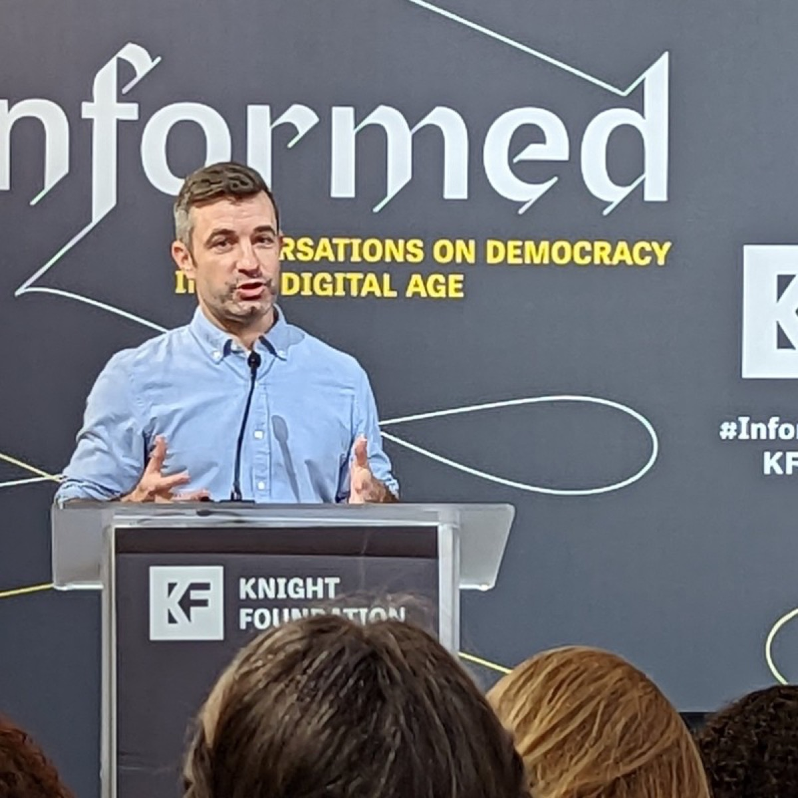

I'm Brandon Silverman and these are a few things about me:
- I'm a dad of three young boys and husband of an amazing wife. We live in Oakland and I spend a lot of time organizing shenanigans, surprises and adventures for all of us.
- I co-founded CrowdTangle, a social analytics tool used by newsrooms, researchers, and elected officials worldwide. The New York Times called it "perhaps the greatest transparency tool in the history of social media." Facebook acquired it in 2016. I stayed on as CEO through 2020.
- I care a lot about trying to make the internet, and social media in particular, easier and safer to study. I've testified before the US Senate and the Australian Parliament on questions of platform transparency.
- I'm an affiliate at the Harvard Berkman Klein Center for Internet and Society and a member of the California Institute for Technology and Democracy's Tech Advisory Council. Previously, I was a Knight Fellow at George Washington University's Institute for Data, Democracy & Politics.
- I love to read and always love suggestions for new books. Here's my Goodreads.
Writing & Speaking
- I write about the internet and regulation on my Substack, Some Good Trouble.
- I speak and write about transparency and platform accountability. Some highlights: co-authoring The Case For Transparency with GWU, speaking at Harvard's Berkman Klein Center, UNESCO's Global Conference, and Stanford's Trust & Safety Conference, appearing on NBC Nightly News and in a Mozilla documentary, and interviews with the New York Times, Wired, The Economist, The Verge, Fast Company, and Platformer.
Side Projects
Other Things
- I advise and invest in startups working on local news, journalism funding, and decarbonization. Before CrowdTangle, I co-founded a nonprofit focused on leadership development and training. I studied Philosophy and Studio Art at Swarthmore College.
Here's my GitHub.